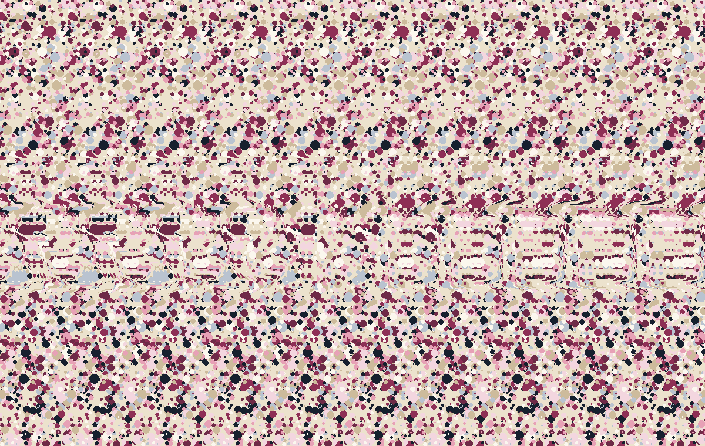

Robotics
A free path through a cluttered room.
Visual-spatial perception for AI agents
Giving AI a sense of shape, distance and how things fit together.
Every AI that sees should see like we do.
sehn = “to see” · say “zane”
The problem
Today’s models talk brilliantly about pictures. Yet they stumble on spatial tasks a small child solves at a glance. Try one yourself.
Roughly what the model gets: separate patches
Tap the box where line A ends.
A three-year-old simply follows the line with their eyes.
A vision model first cuts the picture into a grid of small patches and turns each one into numbers. A line that runs across many patches is no longer one line, so the model has to guess where it goes.
The same blind spot shows up everywhere: what is in front of what, what connects to what, where there is room to move.
How it works
sehn.ai is an MCP service. Tell your agent to use the tools at sehn.ai, and it gains a sense of space it did not have before.
Bring the agent you already use.
“use the tools at sehn.ai”
About shape, position and connection, that it could not give before.
Grounded in neuroscience
Our tools draw on decades of vision neuroscience, and give an LLM the sense of space it can’t get from a list of patches.
First evidence
200 new mazes: which entrance reaches the exit? None of them were used to build or tune the tools, and the analysis was written down before the run.
Guessing scores 30%.
Held up on its first real test79% even on maze styles we never built on. Weaker on unusual rendering styles. One task family so far.
Where it matters
The same sense of space helps wherever a machine has to understand a room, a drawing, a face or a screen.
A free path through a cluttered room.
Follow a pipe or wire through a drawing.
Surfaces and depth that stay consistent.
A hand in front of a face, an object held up.
Follow what moves and connects across frames.
The name
sehn means “to see” in Austrian German.
Diana is Austrian. For her, seeing is the most important part of a good life, and she loves that agents and LLMs can learn to see. Anton’s passion has always been vision: how we see, and how a machine could see the same way.
Both have loved Magic Eye pictures since they were children. A flat pattern, and suddenly depth appears. That moment is what we give to AI.

Try it: look through the picture, as if at something far behind it. One word floats out. When the two dots turn into three, you’re close.
Bring your face close to the screen, so the picture is a blur. Then slowly lean back with relaxed eyes, as if you were looking at a distant point behind the screen. Give it 10 to 30 seconds.
Team
A clinical psychologist with a computer-science background, and an engineer who builds brain-inspired vision systems.
Co-founder · CTO · Research
Co-founder · CEO
Early access
sehn.ai is in early access. Tell us what your agent should see, and we’ll send you an API key to try it.